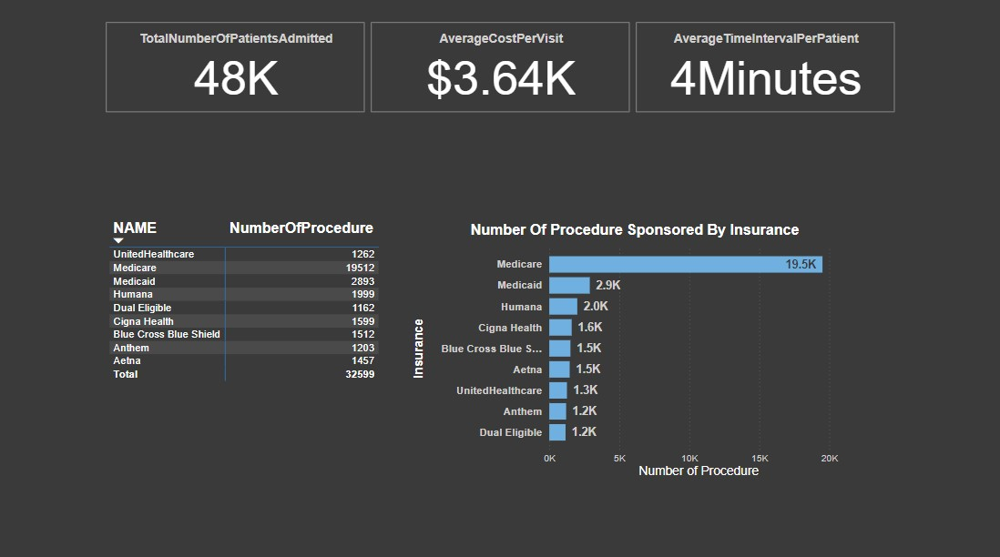
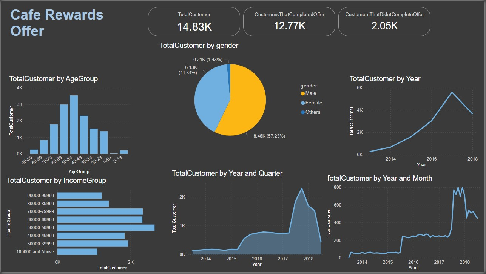

Objective: The project aims to analyze synthetic patient data to reveal trends in admissions, average hospital stays, visit costs, and insurance coverage for procedures.
Tools Used: Excel, Power Query, and Power BI
Description: Collected and cleaned synthetic hospital patient data, performed exploratory data analysis to identify trends in admissions, average hospital stays, visit costs, and insurance coverage for procedures.
Results: Identified top-performing products and regions...

Objective: Simulated data of Cafe Rewards members over 30 days, capturing transactions and responses to personalized promotional offers, including ads, discounts, and BOGO deals. Transactions are linked to offers when redeemed within the specified period.
Tools Used: Excel, Power Query, and Power BI
Description: Collected and cleaned sales data, performed exploratory data analysis...
Results: There is an overall offer completion of 44%, with the most engaged age group being 30-39.
Discount offers saw a 53% completion, with this being especially true for higher-income customers.
The BOGO offers also recorded a phenomenal performance, particularly among the younger demographics.

Objective: Project 3 details...

Objective: Project 4 details...